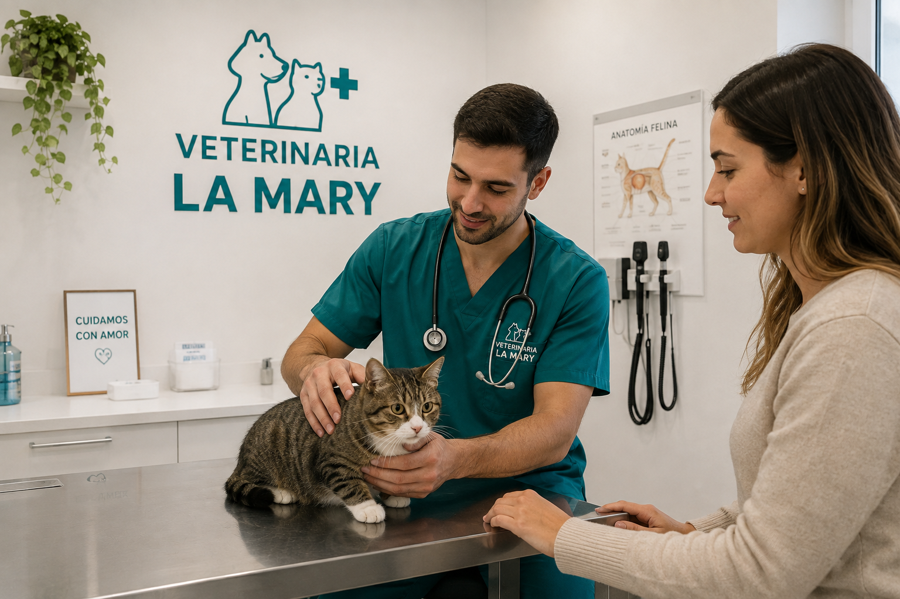
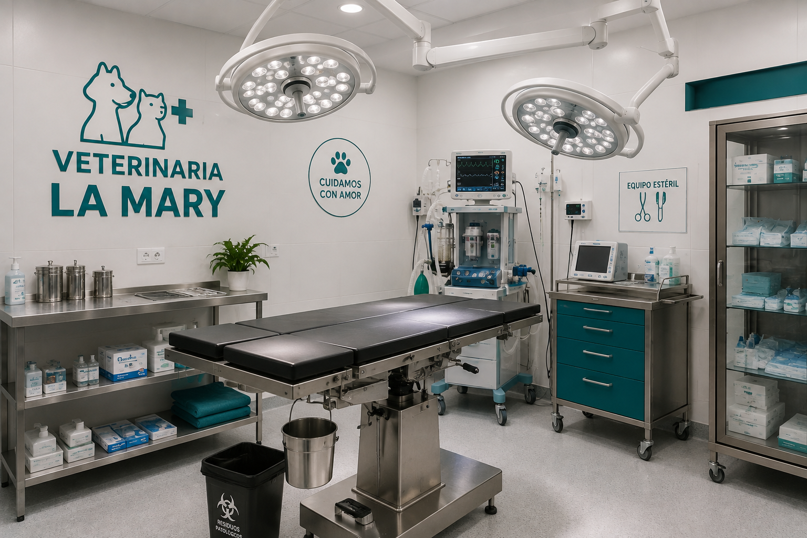
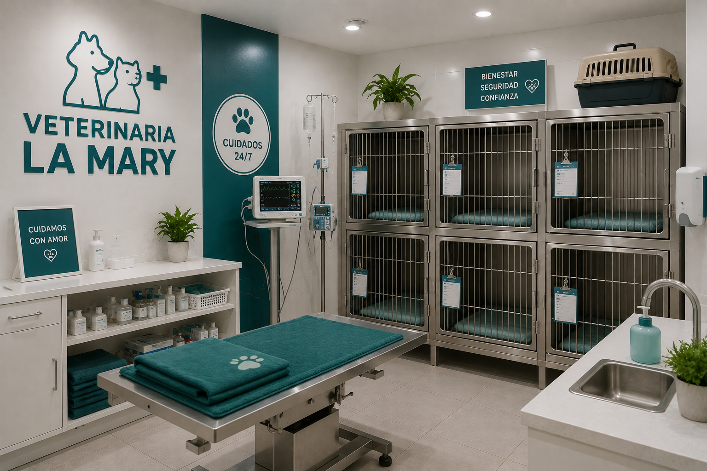
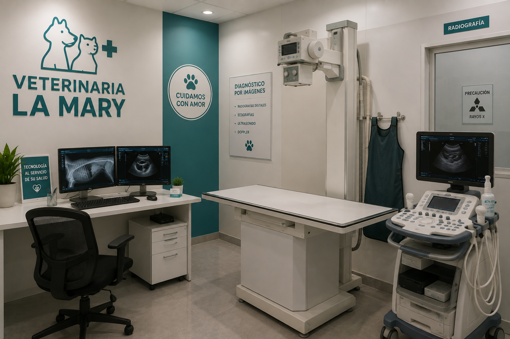

Un proyecto nacido del amor por los animales Veterinaria La Mary nació como un pequeño proyecto impulsado por el amor y la vocación de cuidar a los animales. Desde nuestros comienzos, nos propusimos crear un lugar donde cada mascota pudiera recibir una atención profesional y, al mismo tiempo, sentirse acompañada y cuidada. Con el paso del tiempo, fuimos creciendo gracias a la confianza de las familias que nos eligieron. Cada paciente y cada historia nos ayudaron a construir la veterinaria que somos hoy. Seguimos trabajando con el mismo compromiso de nuestros comienzos: cuidar a cada mascota como si fuera parte de nuestra propia familia.
Nuestra Historia
Nuestros Valores
Amor por los animales Trabajamos con dedicación y empatía, entendiendo que cada mascota merece un trato respetuoso y afectuoso. Profesionalismo Nos comprometemos a brindar una atención responsable, basada en nuestros conocimientos y experiencia. Compromiso Acompañamos a cada familia y buscamos ofrecer siempre la mejor atención posible. Bienestar animal Todas nuestras acciones tienen como prioridad la salud y el bienestar de nuestros pacientes. Mejora continua Creemos en seguir aprendiendo y actualizándonos para brindar un servicio cada vez mejor.
Nuestra visión
Nuestra visión es convertirnos en una veterinaria reconocida por nuestro compromiso, profesionalismo y amor por los animales. Queremos continuar creciendo, incorporando nuevos conocimientos y herramientas que nos permitan mejorar constantemente la atención de nuestros pacientes. Aspiramos a construir una comunidad donde la prevención, el cuidado responsable y el respeto por los animales sean parte de la vida cotidiana.
Nuestro Equipo
Profesionales comprometidos con su bienestar de su mascota.
Nuestro equipo está formado por profesionales apasionados por el cuidado animal, preparados para brindar una atención responsable y de calidad.
Dra. María López
Médica VeterinariaEspecialista en clínica de pequeños animales y comprometida con brindar una atención cercana a cada paciente.
Dr. Juan Martínez
Médico VeterinarioDedicado a la prevención, diagnóstico y tratamiento de diferentes enfermedades en mascotas.
Lic. Sofía Ramírez
Asistente VeterinariaEncargada de acompañar a nuestros pacientes durante su atención y colaborar con el equipo en el cuidado diario.
La Clinica





